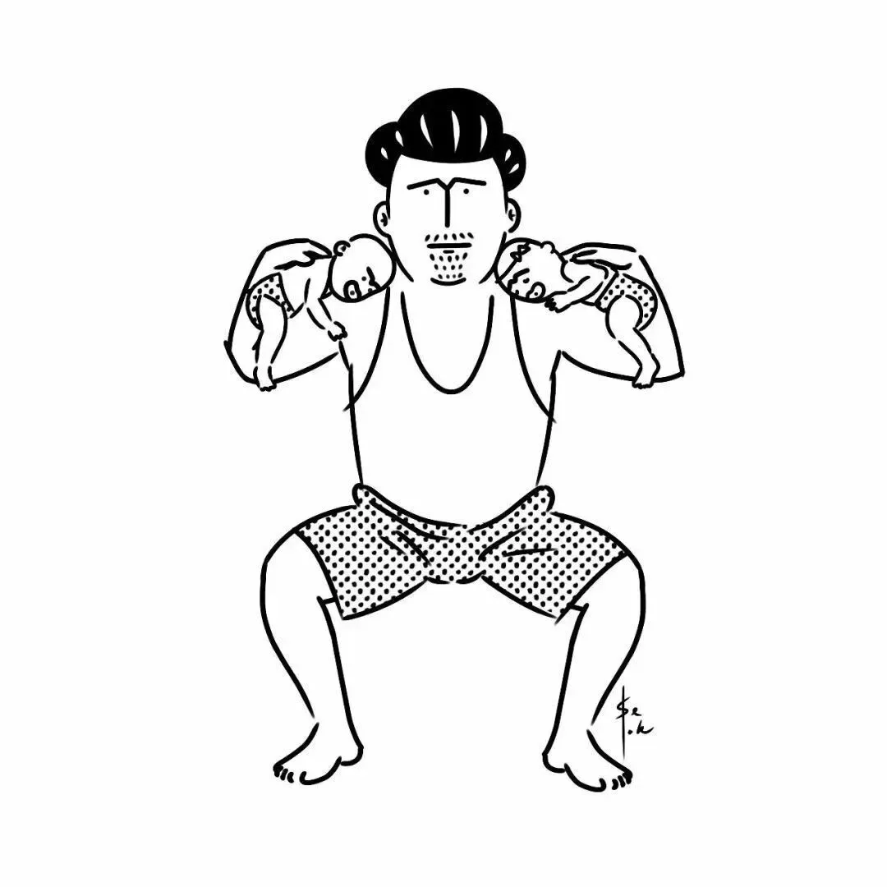
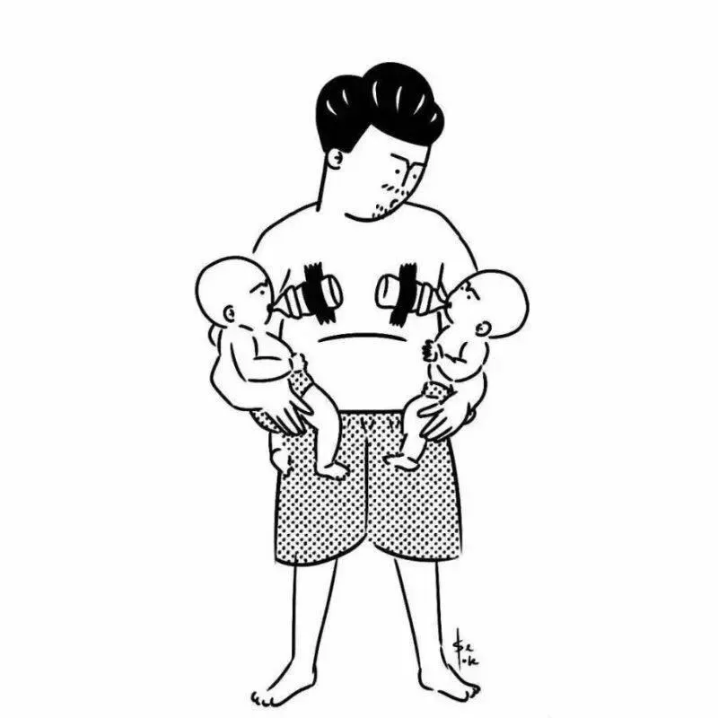

孖仔帮
公众号ID：twinsbang
关注
文|圆圈妈妈
网图|侵删
我们的双胞胎爸爸群成立有好些年头了。
前段时间在群里爬楼，刷到果冻爸晒出两位双胞胎小棉袄的近照，
哇，一下子长大了好多啊。
想当年，我刚认识她们姐俩时，好像才9个月大吧。第一次出现在我们孖仔帮公众号文章上，软糯糯，胖乎乎的，煞是可爱。
现在的姐俩，可爱中又多了几分灵气，外加一点小俏皮，据说已经可以上天入地揭瓦房了。
当代的爸爸们，貌似都不大喜欢发圈晒娃，然而，咱们双胞胎爸爸群的爸爸们却是个例外，他们总会不定期地在群里打卡晒娃，晒两孩子一起搞怪逗比的样子。
我得闲就去社群冒个泡，爬楼看萌娃。因为看着屏幕里的一对对双胞胎一起喝奶，一起闯祸，一起互动，一起玩耍，一起哭闹...很治愈！
总让我想起小时候的圆圈兄弟，两张一模一样的面孔，吐着泡泡看着我笑。明明刚刚还被两只泼猴，气到开冰箱门降火，去爸爸群逛逛转移下注意力，就元神归位了。
不得不说，咱们这么多双胞胎主题的社群，我最喜欢的还是爸爸群。
在这里，我看到的不是巨婴男，不是猪队友，不是搅屎棍，而是一群为了这个特殊双胞胎家庭的幸福生活，不断学习，努力成长的大男孩。
爸爸群内那些正能量的信息，高质量的育儿知识，特立独行的带娃骚操作，搞笑又接地气的心灵鸡汤，总能经得起推敲，值得我去细品。
说来，咱们这个爸爸群，挺坎坷的！
一开始成立就被质疑...
当时只有很少的爸爸加入，为了涨人气，我还定期去每个妈妈群挖人，后面因为一篇文章《为什么双胞胎家庭买7座车都后悔了》，在知乎上莫名其妙上了热搜，很多宝爸以为爸爸群是车友群，于是就被骗进来了。
殊不知，这不仅是个车友群，还是个育儿群，晒娃群，鸡娃群，吐槽群...
一开始，爸爸们都很含蓄，只是聊孕产注意事项，喂奶哄娃经验...后面一番摸底，互相熟络之后，就本性暴露了。
兄弟，来来来撩吧！
聊媳妇聊婚姻，聊丈母娘，聊车聊房子，聊家庭琐事，聊天文地理，五行八卦....
后来因为某些原因被举报，爸爸群莫名其妙被封了，我猜可能是讨论过HK的问题过于敏感。好在，失联的爸爸们很快又重新回到了组织。
为了避免再次封群和无意义的灌水，也让每一位爸爸的疑问都能找到答案，我综合了爸爸们的建议，根据大家关注的侧重点不同，细分出孕爸群和奶爸群。
初衷是很好的，也得到了多数爸爸们的大力支持，有几位元老级的宝爸还自告奋勇去孕爸群给刚入群的小白爸爸们，解答孕产问题。
然而后面发生了一件事，让我至今无法释怀。
那是孕爸群的一位新手爸爸，两胎儿单绒双羊，26周，体重和羊水相差很大，怀疑是双输，急得在群里求助。
然而，孕爸群大都是新手，有经验的大佬毕竟有限，最终没能帮上忙。后面那位孕爸就退群了，有次刷到朋友圈，才知道只保住了一个宝宝。
我感到很遗憾，一种无力感涌上心头。
要是我能及时关注到，并发动其他奶爸群一起来帮忙，或者扩散到妈妈群和朋友圈请求帮助，也许会是另外一种情况。
小小的爸爸群不足挂齿，但我想，合理的优化和管理也许能输出更大的力量。为此，孕爸群和奶爸群合并了，回到最初的模样，不忘初心。
合并后的爸爸群，一如既往的正能量。
大家都很珍惜这份失而复得的默契和共鸣，有些同城的宝爸还面基成功，线下成为了朋友或工作上的合作者，离得近的还相约一起出去遛双胞胎！
有一位宝爸说，好希望多年后，我们的双胞胎长大了，还能在群里一起天南地北地聊。
是的，我也好希望这样啊！
爸爸群是一个温馨的树洞，是一个放心吐槽，宣泄的地方。在这里，你完全不用担心没人陪你尬聊，没人陪你傻笑。
大家互相诉说着初为双胞胎爸爸的焦虑和忐忑，探讨双胎妊娠产检注意事项，分享即将升级孖宝爸的紧张激动，吐槽养育双胞胎那些酸甜苦辣，寻找养娃育儿那些创新理念…
虽然大家素未谋面，但因双胞胎结缘，感觉跟老朋友一样熟悉，一样惺惺相惜。
养育双胞胎那些槽点，痛点，尿点，不用多说，即可明了。
哥聊的是心情！谈的是情怀！
说的都是养育双胞胎那些泪和累。
一番摸滚带爬后，从当初的一脸懵逼，渐渐成长为两个人类幼崽的首席铲屎官。
可以说：爸爸群，见证着孩子们的成长，也见证了爸爸们从当初的大男孩成长为男子汉的破茧蜕变。
经常有妈妈问我，爸爸群都在聊什么呢？
那我们来看看，爸爸们会在群里问什么问题？
囤奶粉尿不湿哪家强？
买什么婴儿车？给娃买哪种保险靠谱？买7座车还是5座车？
娃拉绿便如何治，娃湿疹如何解，娃老咳嗽怎么办？
周末带娃去哪里耍？哪些玩具适合双胞胎玩？推荐下。
我和媳妇吵架了，如何破？
媳妇和老妈又闹矛盾了，求安慰
母亲节/三八节/生日，送什么礼物给孩子们的妈？
...
还有，爸爸们也会有感性的时候：
哥俩会喊爸爸啦，兴奋了一个下午
姐俩被我摔床底下了，心疼了三天三夜
兄妹俩又双叒叕发烧了，失眠了7天7夜
...
跟一群YYDS的爸爸们聊天，从字里行间，就能深切体会到，什么叫父爱如山。

他们的父爱，深沉，不热烈，不高调，默默地做孩子们的金钟罩。
祝爸爸们，父亲节快乐！
-END-
今日互动话题
评论区聊一聊呗！
微信公众号：孖仔帮
ID : twinsbang
专注双胞胎孕育，养育，教育经验分享
扫码关注我们
点一下你会更好看耶
